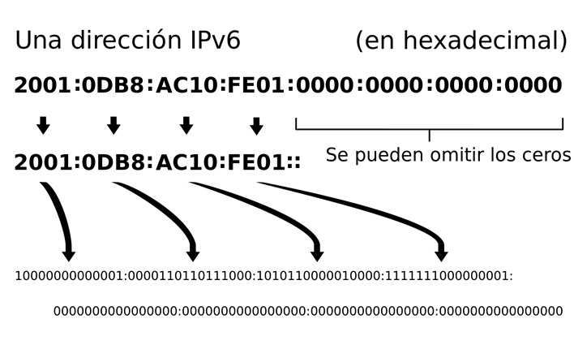

4. IP Versión 6
1. Introducción
IPv6 es la actualización del protocolo IPv4. Su función principal es la de solucionar el problema actual con las direcciones IPv4.
IPv4 utiliza direcciones de 32 bits (2^32) lo que nos da a un máximo de 4.294.967.296 direcciones IP únicas. Debido al crecimiento exponencial de dispositivos, las IPs de esta versión se agotaron oficialmente en 2011.
Para solucionar este problema se comenzó a desarrollar en 1998 la versión 6. Esta versión utiliza 128 bits (2^128) en vez de 32, lo que permite utilizar aproximadamente 340 sextillones de direcciones.
2. Cambios respecto a IPv4
En muchos aspectos IPv6 es similar a IPv4, ya que muchas de sus características se mantienen. Pero, también dispone de otras nuevas.
- IPv6 hace uso del sistema hexadecimal, es decir, 16 símbolos (0 al 9 y A a F) en vez del decimal de su versión anterior (Del 0 al 9 únicamente).
- Uno de los cambios, son las cabeceras. IPv6 dispone de un formato nuevo de paquete, por lo que las comunicaciones, debido a las diferencias en las cabeceras, entre IPv4 e IPv6 no son posibles.
- IPv6 dispone de jerarquías, los que permite unificar rutas. Creando de este modo un enrutamiento más eficiente en internet.
- Se elimina el broadcast, debido al gran número de IPs posibles, esta característica ya no existe. En su lugar se hará uso de multicast para comunicaciones masivas.
- IPv6 ya no utiliza las tablas ARP. En su lugar hace uso del multicasting. Esta característica permite la creación de grupos predefinidos de dispositivos. De esta forma, mediante la llamada a una única dirección, se realiza la comunicación con todo el grupo de dispositivos definido.
3. Estructura de las direcciones IPv6
Las direcciones IPv6 tienen una longitud de 128bits (16 bytes).
Las IPs versión 6 tienen una notación hexadecimal. Se divide en 8 bloque de 16 bits, cada uno de estos bloques esta formado por 4 dígitos en hexadecimal (0-F) y cada uno de estos bloques se separa mediante el uso del símbolo “:”
También se permite abreviar estas IPs, cuando existe un bloque con varios ceros por delante, se puede omitir, por ejemplo: 000A puede ser sustituido por A (no se puede hacer en el caso contrario: A000). Además, si existe un bloque completo de ceros, se pueden omitir directamente. Para comprimir estos bloques se hace uso del siguiente símbolo “::”
Ejemplo completo:
- 1A3F:0007:2100:932A:0000:0000:0000:0721B puede ser abreviado a 1A3F:7:2100:932A::0721B.
Esta abreviación solo puede ser realizada una vez en la misma dirección. En caso de existir varios bloques completos de ceros, solo se sustituirá el primer bloque por “::”.

WiKipedia. Descripción IP versión 6.
4. Direccionamiento IPv6
En IPv6 se dispone de 3 tipos de direccionamientos:
- Unicast: Las direcciones IPv6 unicast identifican únicamente a un dispositivo de la red, de este modo, un paquete dirigido a una dirección unicast, se entregará solamente al dispositivo identificado con esa dirección IP. Existen varios tipos y pueden hacer referencia tanto a dispositivos en internet como a direcciones locales.
- Multicast: Las direcciones IPv6 multicast son parecidas a las de IPv4. Estas direcciones comienzan por FF00::/8. Nota: en IPv6 se usan prefijos para la identificación del tipo de direcciones. En nuestro caso ff00:/8 es el prefijo multicast. Las direcciones multicast identifican a un grupo de dispositivos. Un paquete dirigido a una dirección multicast se entregará a todos los dispositivos identificados con esa dirección. En IPv6 no existe el direccionamiento broadcast, por lo que se puede utilizar una dirección multicast a todos los dispositivos para realizar la misma función.
- Anycast: Las direcciones IPv6 anycast identifican a un grupo de dispositivos, este tipo de direccionamiento no se encuentra en IPv4. Cuando un paquete es dirigido a una dirección anycast, este solo se entrega al dispositivo más cercano de ese grupo de dispositivos. Con cercano hacemos referencia a la métrica utilizada por el protocolo de enrutado.
5. Referencias
Obra publicada con Licencia Creative Commons Reconocimiento No comercial Compartir igual 4.0